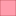
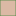

<!doctype html>
<html lang="en">
    <head>
        <meta charset="utf-8">
        <meta http-equiv="X-UA-Compatible" content="IE=edge">
        <meta name="viewport" content="initial-scale=1,user-scalable=no,maximum-scale=1,width=device-width">
        <meta name="mobile-web-app-capable" content="yes">
        <meta name="apple-mobile-web-app-capable" content="yes">
        <link rel="stylesheet" href="css/leaflet.css">
        <link rel="stylesheet" href="css/qgis2web.css"><link rel="stylesheet" href="css/fontawesome-all.min.css">
        <style>
        html, body, #map {
            width: 100%;
            height: 100%;
            padding: 0;
            margin: 0;
        }
        </style>
        <title></title>
    </head>
    <body>
        <div id="map">
        </div>
        <script src="js/qgis2web_expressions.js"></script>
        <script src="js/leaflet.js"></script>
        <script src="js/leaflet.rotatedMarker.js"></script>
        <script src="js/leaflet.pattern.js"></script>
        <script src="js/leaflet-hash.js"></script>
        <script src="js/Autolinker.min.js"></script>
        <script src="js/rbush.min.js"></script>
        <script src="js/labelgun.min.js"></script>
        <script src="js/labels.js"></script>
        <script src="data/WilayahDesa_1.js"></script>
        <script src="data/PerkampunganPenduduk_2.js"></script>
        <script src="data/JalurEvakuasi_3.js"></script>
        <script src="data/DaerahEvakuasi_4.js"></script>
        <script src="data/ZonaPotensiSedangRendahterkenaTsunami_5.js"></script>
        <script src="data/ZonaPotensiTinggiterkenaTsunami_6.js"></script>
        <script src="data/MasjidatauToko_7.js"></script>
        <script src="data/JalanUtama_8.js"></script>
        <script src="data/JalanSetapak_9.js"></script>
        <script>
        var map = L.map('map', {
            zoomControl:true, maxZoom:28, minZoom:1
        })
        var hash = new L.Hash(map);
        map.attributionControl.setPrefix('<a href="https://github.com/tomchadwin/qgis2web" target="_blank">qgis2web</a> &middot; <a href="https://leafletjs.com" title="A JS library for interactive maps">Leaflet</a> &middot; <a href="https://qgis.org">QGIS</a>');
        var autolinker = new Autolinker({truncate: {length: 30, location: 'smart'}});
        var bounds_group = new L.featureGroup([]);
        function setBounds() {
            if (bounds_group.getLayers().length) {
                map.fitBounds(bounds_group.getBounds());
            }
        }
        map.createPane('pane_OpenStreetMap_0');
        map.getPane('pane_OpenStreetMap_0').style.zIndex = 400;
        var layer_OpenStreetMap_0 = L.tileLayer('https://tile.openstreetmap.org/{z}/{x}/{y}.png', {
            pane: 'pane_OpenStreetMap_0',
            opacity: 1.0,
            attribution: '',
            minZoom: 1,
            maxZoom: 28,
            minNativeZoom: 0,
            maxNativeZoom: 19
        });
        layer_OpenStreetMap_0;
        map.addLayer(layer_OpenStreetMap_0);
        function pop_WilayahDesa_1(feature, layer) {
            var popupContent = '<table>\
                    <tr>\
                        <td colspan="2">' + (feature.properties['id'] !== null ? autolinker.link(feature.properties['id'].toLocaleString()) : '') + '</td>\
                    </tr>\
                    <tr>\
                        <th scope="row">nama</th>\
                        <td>' + (feature.properties['nama'] !== null ? autolinker.link(feature.properties['nama'].toLocaleString()) : '') + '</td>\
                    </tr>\
                    <tr>\
                        <th scope="row">korban</th>\
                        <td>' + (feature.properties['korban'] !== null ? autolinker.link(feature.properties['korban'].toLocaleString()) : '') + '</td>\
                    </tr>\
                </table>';
            layer.bindPopup(popupContent, {maxHeight: 400});
        }

        function style_WilayahDesa_1_0() {
            return {
                pane: 'pane_WilayahDesa_1',
                opacity: 1,
                color: 'rgba(38,89,128,1.0)',
                dashArray: '',
                lineCap: 'butt',
                lineJoin: 'miter',
                weight: 1.0, 
                fill: true,
                fillOpacity: 1,
                fillColor: 'rgba(140,202,245,1.0)',
                interactive: true,
            }
        }
        map.createPane('pane_WilayahDesa_1');
        map.getPane('pane_WilayahDesa_1').style.zIndex = 401;
        map.getPane('pane_WilayahDesa_1').style['mix-blend-mode'] = 'normal';
        var layer_WilayahDesa_1 = new L.geoJson(json_WilayahDesa_1, {
            attribution: '',
            interactive: true,
            dataVar: 'json_WilayahDesa_1',
            layerName: 'layer_WilayahDesa_1',
            pane: 'pane_WilayahDesa_1',
            onEachFeature: pop_WilayahDesa_1,
            style: style_WilayahDesa_1_0,
        });
        bounds_group.addLayer(layer_WilayahDesa_1);
        map.addLayer(layer_WilayahDesa_1);
        function pop_PerkampunganPenduduk_2(feature, layer) {
            var popupContent = '<table>\
                    <tr>\
                        <td colspan="2">' + (feature.properties['FID'] !== null ? autolinker.link(feature.properties['FID'].toLocaleString()) : '') + '</td>\
                    </tr>\
                </table>';
            layer.bindPopup(popupContent, {maxHeight: 400});
        }

        function style_PerkampunganPenduduk_2_0() {
            return {
                pane: 'pane_PerkampunganPenduduk_2',
                opacity: 1,
                color: 'rgba(56,128,54,1.0)',
                dashArray: '',
                lineCap: 'butt',
                lineJoin: 'miter',
                weight: 1.0, 
                fill: true,
                fillOpacity: 1,
                fillColor: 'rgba(219,185,165,1.0)',
                interactive: true,
            }
        }
        map.createPane('pane_PerkampunganPenduduk_2');
        map.getPane('pane_PerkampunganPenduduk_2').style.zIndex = 402;
        map.getPane('pane_PerkampunganPenduduk_2').style['mix-blend-mode'] = 'normal';
        var layer_PerkampunganPenduduk_2 = new L.geoJson(json_PerkampunganPenduduk_2, {
            attribution: '',
            interactive: true,
            dataVar: 'json_PerkampunganPenduduk_2',
            layerName: 'layer_PerkampunganPenduduk_2',
            pane: 'pane_PerkampunganPenduduk_2',
            onEachFeature: pop_PerkampunganPenduduk_2,
            style: style_PerkampunganPenduduk_2_0,
        });
        bounds_group.addLayer(layer_PerkampunganPenduduk_2);
        map.addLayer(layer_PerkampunganPenduduk_2);
        function pop_JalurEvakuasi_3(feature, layer) {
            var popupContent = '<table>\
                    <tr>\
                        <td colspan="2">' + (feature.properties['id'] !== null ? autolinker.link(feature.properties['id'].toLocaleString()) : '') + '</td>\
                    </tr>\
                </table>';
            layer.bindPopup(popupContent, {maxHeight: 400});
        }

        function style_JalurEvakuasi_3_0() {
            return {
                pane: 'pane_JalurEvakuasi_3',
                opacity: 1,
                color: 'rgba(116,231,149,1.0)',
                dashArray: '',
                lineCap: 'square',
                lineJoin: 'bevel',
                weight: 4.0,
                fillOpacity: 0,
                interactive: true,
            }
        }
        map.createPane('pane_JalurEvakuasi_3');
        map.getPane('pane_JalurEvakuasi_3').style.zIndex = 403;
        map.getPane('pane_JalurEvakuasi_3').style['mix-blend-mode'] = 'normal';
        var layer_JalurEvakuasi_3 = new L.geoJson(json_JalurEvakuasi_3, {
            attribution: '',
            interactive: true,
            dataVar: 'json_JalurEvakuasi_3',
            layerName: 'layer_JalurEvakuasi_3',
            pane: 'pane_JalurEvakuasi_3',
            onEachFeature: pop_JalurEvakuasi_3,
            style: style_JalurEvakuasi_3_0,
        });
        bounds_group.addLayer(layer_JalurEvakuasi_3);
        map.addLayer(layer_JalurEvakuasi_3);
        function pop_DaerahEvakuasi_4(feature, layer) {
            var popupContent = '<table>\
                    <tr>\
                        <td colspan="2">' + (feature.properties['id'] !== null ? autolinker.link(feature.properties['id'].toLocaleString()) : '') + '</td>\
                    </tr>\
                </table>';
            layer.bindPopup(popupContent, {maxHeight: 400});
        }

        function style_DaerahEvakuasi_4_0() {
            return {
                pane: 'pane_DaerahEvakuasi_4',
                opacity: 1,
                color: 'rgba(35,35,35,1.0)',
                dashArray: '',
                lineCap: 'butt',
                lineJoin: 'miter',
                weight: 1.0, 
                fill: true,
                fillOpacity: 1,
                fillColor: 'rgba(116,231,149,1.0)',
                interactive: true,
            }
        }
        map.createPane('pane_DaerahEvakuasi_4');
        map.getPane('pane_DaerahEvakuasi_4').style.zIndex = 404;
        map.getPane('pane_DaerahEvakuasi_4').style['mix-blend-mode'] = 'normal';
        var layer_DaerahEvakuasi_4 = new L.geoJson(json_DaerahEvakuasi_4, {
            attribution: '',
            interactive: true,
            dataVar: 'json_DaerahEvakuasi_4',
            layerName: 'layer_DaerahEvakuasi_4',
            pane: 'pane_DaerahEvakuasi_4',
            onEachFeature: pop_DaerahEvakuasi_4,
            style: style_DaerahEvakuasi_4_0,
        });
        bounds_group.addLayer(layer_DaerahEvakuasi_4);
        map.addLayer(layer_DaerahEvakuasi_4);
        function pop_ZonaPotensiSedangRendahterkenaTsunami_5(feature, layer) {
            var popupContent = '<table>\
                    <tr>\
                        <td colspan="2">' + (feature.properties['id'] !== null ? autolinker.link(feature.properties['id'].toLocaleString()) : '') + '</td>\
                    </tr>\
                </table>';
            layer.bindPopup(popupContent, {maxHeight: 400});
        }

        function style_ZonaPotensiSedangRendahterkenaTsunami_5_0() {
            return {
                pane: 'pane_ZonaPotensiSedangRendahterkenaTsunami_5',
                opacity: 1,
                color: 'rgba(35,35,35,1.0)',
                dashArray: '',
                lineCap: 'butt',
                lineJoin: 'miter',
                weight: 1.0, 
                fill: true,
                fillOpacity: 1,
                fillColor: 'rgba(255,193,47,1.0)',
                interactive: true,
            }
        }
        map.createPane('pane_ZonaPotensiSedangRendahterkenaTsunami_5');
        map.getPane('pane_ZonaPotensiSedangRendahterkenaTsunami_5').style.zIndex = 405;
        map.getPane('pane_ZonaPotensiSedangRendahterkenaTsunami_5').style['mix-blend-mode'] = 'normal';
        var layer_ZonaPotensiSedangRendahterkenaTsunami_5 = new L.geoJson(json_ZonaPotensiSedangRendahterkenaTsunami_5, {
            attribution: '',
            interactive: true,
            dataVar: 'json_ZonaPotensiSedangRendahterkenaTsunami_5',
            layerName: 'layer_ZonaPotensiSedangRendahterkenaTsunami_5',
            pane: 'pane_ZonaPotensiSedangRendahterkenaTsunami_5',
            onEachFeature: pop_ZonaPotensiSedangRendahterkenaTsunami_5,
            style: style_ZonaPotensiSedangRendahterkenaTsunami_5_0,
        });
        bounds_group.addLayer(layer_ZonaPotensiSedangRendahterkenaTsunami_5);
        map.addLayer(layer_ZonaPotensiSedangRendahterkenaTsunami_5);
        function pop_ZonaPotensiTinggiterkenaTsunami_6(feature, layer) {
            var popupContent = '<table>\
                    <tr>\
                        <td colspan="2">' + (feature.properties['id'] !== null ? autolinker.link(feature.properties['id'].toLocaleString()) : '') + '</td>\
                    </tr>\
                </table>';
            layer.bindPopup(popupContent, {maxHeight: 400});
        }

        function style_ZonaPotensiTinggiterkenaTsunami_6_0() {
            return {
                pane: 'pane_ZonaPotensiTinggiterkenaTsunami_6',
                opacity: 1,
                color: 'rgba(128,14,16,1.0)',
                dashArray: '',
                lineCap: 'butt',
                lineJoin: 'miter',
                weight: 1.0, 
                fill: true,
                fillOpacity: 1,
                fillColor: 'rgba(255,60,92,1.0)',
                interactive: true,
            }
        }
        map.createPane('pane_ZonaPotensiTinggiterkenaTsunami_6');
        map.getPane('pane_ZonaPotensiTinggiterkenaTsunami_6').style.zIndex = 406;
        map.getPane('pane_ZonaPotensiTinggiterkenaTsunami_6').style['mix-blend-mode'] = 'normal';
        var layer_ZonaPotensiTinggiterkenaTsunami_6 = new L.geoJson(json_ZonaPotensiTinggiterkenaTsunami_6, {
            attribution: '',
            interactive: true,
            dataVar: 'json_ZonaPotensiTinggiterkenaTsunami_6',
            layerName: 'layer_ZonaPotensiTinggiterkenaTsunami_6',
            pane: 'pane_ZonaPotensiTinggiterkenaTsunami_6',
            onEachFeature: pop_ZonaPotensiTinggiterkenaTsunami_6,
            style: style_ZonaPotensiTinggiterkenaTsunami_6_0,
        });
        bounds_group.addLayer(layer_ZonaPotensiTinggiterkenaTsunami_6);
        map.addLayer(layer_ZonaPotensiTinggiterkenaTsunami_6);
        function pop_MasjidatauToko_7(feature, layer) {
            var popupContent = '<table>\
                    <tr>\
                        <td colspan="2">' + (feature.properties['id'] !== null ? autolinker.link(feature.properties['id'].toLocaleString()) : '') + '</td>\
                    </tr>\
                    <tr>\
                        <th scope="row">nama</th>\
                        <td>' + (feature.properties['nama'] !== null ? autolinker.link(feature.properties['nama'].toLocaleString()) : '') + '</td>\
                    </tr>\
                </table>';
            layer.bindPopup(popupContent, {maxHeight: 400});
        }

        function style_MasjidatauToko_7_0() {
            return {
                pane: 'pane_MasjidatauToko_7',
                radius: 4.0,
                opacity: 1,
                color: 'rgba(35,35,35,1.0)',
                dashArray: '',
                lineCap: 'butt',
                lineJoin: 'miter',
                weight: 1,
                fill: true,
                fillOpacity: 1,
                fillColor: 'rgba(43,24,249,1.0)',
                interactive: true,
            }
        }
        map.createPane('pane_MasjidatauToko_7');
        map.getPane('pane_MasjidatauToko_7').style.zIndex = 407;
        map.getPane('pane_MasjidatauToko_7').style['mix-blend-mode'] = 'normal';
        var layer_MasjidatauToko_7 = new L.geoJson(json_MasjidatauToko_7, {
            attribution: '',
            interactive: true,
            dataVar: 'json_MasjidatauToko_7',
            layerName: 'layer_MasjidatauToko_7',
            pane: 'pane_MasjidatauToko_7',
            onEachFeature: pop_MasjidatauToko_7,
            pointToLayer: function (feature, latlng) {
                var context = {
                    feature: feature,
                    variables: {}
                };
                return L.circleMarker(latlng, style_MasjidatauToko_7_0(feature));
            },
        });
        bounds_group.addLayer(layer_MasjidatauToko_7);
        map.addLayer(layer_MasjidatauToko_7);
        function pop_JalanUtama_8(feature, layer) {
            var popupContent = '<table>\
                    <tr>\
                        <td colspan="2">' + (feature.properties['id'] !== null ? autolinker.link(feature.properties['id'].toLocaleString()) : '') + '</td>\
                    </tr>\
                </table>';
            layer.bindPopup(popupContent, {maxHeight: 400});
        }

        function style_JalanUtama_8_0() {
            return {
                pane: 'pane_JalanUtama_8',
                opacity: 1,
                color: 'rgba(0,0,0,1.0)',
                dashArray: '',
                lineCap: 'square',
                lineJoin: 'bevel',
                weight: 4.0,
                fillOpacity: 0,
                interactive: true,
            }
        }
        map.createPane('pane_JalanUtama_8');
        map.getPane('pane_JalanUtama_8').style.zIndex = 408;
        map.getPane('pane_JalanUtama_8').style['mix-blend-mode'] = 'normal';
        var layer_JalanUtama_8 = new L.geoJson(json_JalanUtama_8, {
            attribution: '',
            interactive: true,
            dataVar: 'json_JalanUtama_8',
            layerName: 'layer_JalanUtama_8',
            pane: 'pane_JalanUtama_8',
            onEachFeature: pop_JalanUtama_8,
            style: style_JalanUtama_8_0,
        });
        bounds_group.addLayer(layer_JalanUtama_8);
        map.addLayer(layer_JalanUtama_8);
        function pop_JalanSetapak_9(feature, layer) {
            var popupContent = '<table>\
                    <tr>\
                        <td colspan="2">' + (feature.properties['id'] !== null ? autolinker.link(feature.properties['id'].toLocaleString()) : '') + '</td>\
                    </tr>\
                </table>';
            layer.bindPopup(popupContent, {maxHeight: 400});
        }

        function style_JalanSetapak_9_0() {
            return {
                pane: 'pane_JalanSetapak_9',
                opacity: 1,
                color: 'rgba(0,0,0,1.0)',
                dashArray: '',
                lineCap: 'square',
                lineJoin: 'bevel',
                weight: 1.0,
                fillOpacity: 0,
                interactive: true,
            }
        }
        map.createPane('pane_JalanSetapak_9');
        map.getPane('pane_JalanSetapak_9').style.zIndex = 409;
        map.getPane('pane_JalanSetapak_9').style['mix-blend-mode'] = 'normal';
        var layer_JalanSetapak_9 = new L.geoJson(json_JalanSetapak_9, {
            attribution: '',
            interactive: true,
            dataVar: 'json_JalanSetapak_9',
            layerName: 'layer_JalanSetapak_9',
            pane: 'pane_JalanSetapak_9',
            onEachFeature: pop_JalanSetapak_9,
            style: style_JalanSetapak_9_0,
        });
        bounds_group.addLayer(layer_JalanSetapak_9);
        map.addLayer(layer_JalanSetapak_9);
        var baseMaps = {};
        L.control.layers(baseMaps,{' Jalan Setapak': layer_JalanSetapak_9,' Jalan Utama': layer_JalanUtama_8,' Masjid atau Toko': layer_MasjidatauToko_7,' Zona Potensi Tinggi terkena Tsunami': layer_ZonaPotensiTinggiterkenaTsunami_6,' Zona Potensi Sedang/Rendah terkena Tsunami': layer_ZonaPotensiSedangRendahterkenaTsunami_5,' Daerah Evakuasi': layer_DaerahEvakuasi_4,' Jalur Evakuasi': layer_JalurEvakuasi_3,' Perkampungan Penduduk': layer_PerkampunganPenduduk_2,' Wilayah Desa': layer_WilayahDesa_1,"OpenStreetMap": layer_OpenStreetMap_0,},{collapsed:false}).addTo(map);
        setBounds();
        </script>
    </body>
</html>
